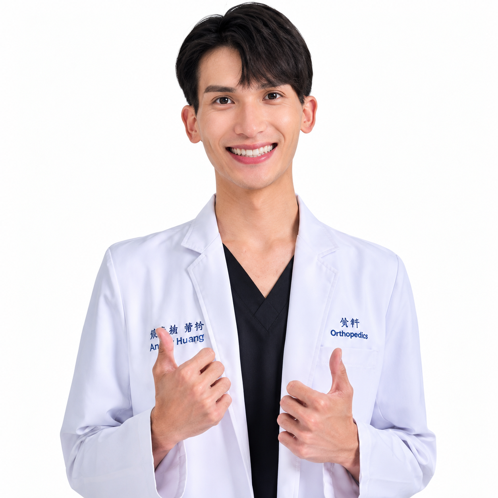

新北・新店
豐榮醫院
Xindian · New Taipei City
位於新北新店，骨科團隊提供手外科、骨折創傷與骨質疏鬆等診療服務，協助評估骨骼健康與活動功能。
新北市新店區安德街 26 巷 3 號
Orthopedics & Hand Surgery
Ting-Han Tai, MD
骨科・手外科
每一個動作，都值得用心。
從手部不適、骨折創傷，到日常的骨骼健康。
以細緻的評估，理解每個動作背後的需要。

01 / About the doctor
戴廷翰醫師畢業於臺北醫學大學醫學系，完成雙和醫院骨科住院醫師與總醫師訓練。臨床專注手部疾病、骨折創傷與骨骼健康，也持續參與研究與醫學進修。
查看北醫大學術簡介臺北醫學大學醫學系，取得醫學士學位。
雙和醫院畢業後一般醫學訓練、骨科住院醫師與總醫師訓練。
日本東北大學骨科部臨床研究經歷；臺大醫院小兒骨科、臺北榮總骨腫瘤代訓。
臺北醫學大學臨床醫學研究所博士班進修。
學經歷依北醫大與院方公開資料整理；博士班進修不代表已取得博士學位。
02 / Clinical focus
認識戴醫師的主要診療領域。每一項處置，都從個別狀況的評估與討論開始。
Small movements.
Meaningful moments.
關注手指、手腕與上肢常見的不適，診療領域涵蓋肌腱、神經壓迫及腱鞘相關問題。
從骨折與外傷評估、固定方式的討論，到後續功能照護，依骨折型態與個人需求規劃。
院方列有超音波導引注射診療項目。實際適用情況、處置內容與可提供的服務，請於門診與醫師確認。
診療領域包含骨質疏鬆症評估與治療；並透過健康衛教，分享肌力、日常活動與骨骼健康相關主題。
03 / Publications
從骨折治療的研究回顧，到 NEJM 臨床影像，閱讀戴醫師參與的學術發表。
系統性回顧、統合分析與文獻回顧，文章類型逐篇標示。
Orthopaedics & Traumatology: Surgery & Research · 系統性回顧與統合分析 · 第一作者
Lag screw versus locking plate fixation for traumatic displaced medial malleolar fractures: a systematic review and meta-analysis
Journal of Clinical Medicine · 單中心經驗與文獻回顧 · 共同作者
Locking Plate Fixation with Calcium Phosphate Bone Cement Augmentation for Elderly Proximal Humerus Fractures-A Single-Center Experience and Literature Review
Journal of Clinical Medicine · 系統性回顧 · 共同作者
Intramedullary Screw versus Locking Plate Fixation for Traumatic Displaced Proximal Fifth Metatarsal Fractures: A Systematic Review
Journal of Clinical Medicine · 敘述性回顧與統合分析 · 共同作者
Intramedullary Nail vs. Plate Fixation for Pathological Humeral Shaft Fracture: An Updated Narrative Review and Meta-Analysis of Surgery-Related Factors
Journal of Clinical Medicine · 敘述性回顧 · 第一作者
Current Management and Volar Locking Plate Fixation with Bone Cement Augmentation for Elderly Distal Radius Fractures-An Updated Narrative Review
The New England Journal of Medicine · Images in Clinical Medicine
The New England Journal of Medicine · Images in Clinical Medicine · 第一作者
Isolated Ulnar Shaft Fracture
The New England Journal of Medicine · Images in Clinical Medicine · 第一作者
Legg-Calvé-Perthes Disease
The New England Journal of Medicine · Images in Clinical Medicine · 第一作者
Open-Book Pelvic Fracture
各篇均可連至 PubMed，查閱摘要、作者及期刊原文入口。
北醫學術檔案與完整研究清單04 / Press & stories
六則媒體報導與講座紀錄，分享戴醫師在手外科、骨科與日常健康的觀察。
一則關於手部肌腱損傷的報導，提醒我們關注表面傷口之外的活動與功能。
戴醫師在報導中說明自體血小板血漿的製備概念，及接受治療前的評估重點。
從手指外傷案例，認識伸肌腱損傷與鈕扣指畸形相關的評估議題。
從拇指外傷報導，認識伸拇指肌腱損傷與手部活動功能的關係。
北大經濟系系友會健康講座回顧，分享飲食、肌力與骨骼健康的日常實踐。
從車禍後持續的瘀青與腫脹，認識閉合性去套傷的評估議題。
配圖為原創主題示意，點選卡片可閱讀原始報導與活動紀錄。
05 / Clinics & appointments
前往院所官方網站，查看最新門診公告、醫師診次與掛號方式。
Xindian · New Taipei City
位於新北新店，骨科團隊提供手外科、骨折創傷與骨質疏鬆等診療服務，協助評估骨骼健康與活動功能。
新北市新店區安德街 26 巷 3 號
Bade · Taoyuan
位於桃園八德，結合骨科與復健等醫療服務，提供關節、運動傷害及骨骼健康相關診療。
桃園市八德區介壽路一段 958、960 號
醫師診次、休診與預約方式可能調整，請以院所最新公告為準。本網站不受理掛號或蒐集病歷資料。